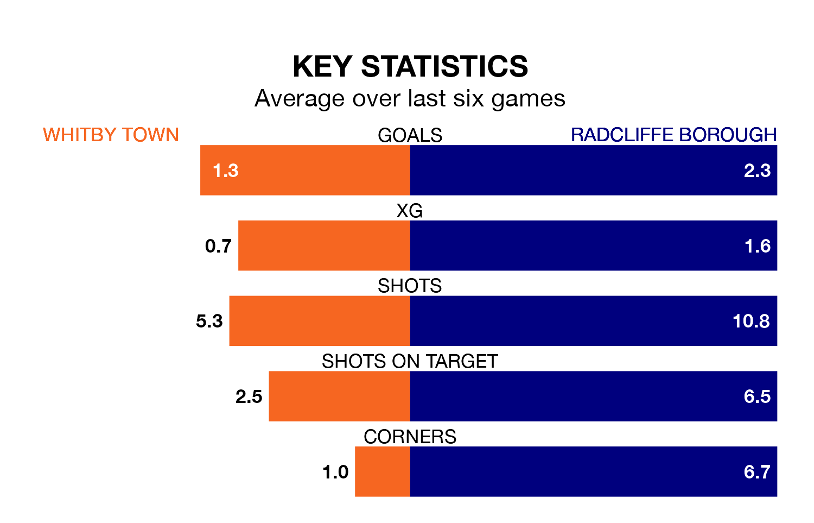

Radcliffe Borough face a challenge to maintain their high-scoring form away against a tight Whitby Town defence on Saturday.
With 99 goals in 37 games, Radcliffe are the top scorers in the Northern Premier League ahead of the 3pm kick-off at the Turnbull Ground.
They face a Whitby side who have scored 54 in 35 matches, but conceded only 42 goals, putting them fourth among the league's tightest defences – only Macclesfield, Warrington Rylands and Worksop Town have conceded fewer goals.
Radcliffe are top of the table after 37 games, of which they have won 27 and drawn two, earning 83 points.
Whitby are nine places behind Borough in 10th, with 16 wins and eight draws putting them on 56 points.
In the last 10 years, Whitby and Radcliffe have played each other on eight occasions. Whitby won one of them, Radcliffe two, and they drew five times.
On average, Whitby scored 1.5 goals and the Boro 1.6 in those matches.
Their last meeting was on November 21, when Whitby won 1-0 away.
Town are in mixed form in the Northern Premier League, with two wins and a draw from their last six games.
With four wins and two losses over that period, the Boro's form is better – they have taken 12 points from 18, compared to the home side's seven.
Whitby's last match was on April 6, a 1-0 loss against Stafford Rangers.
Radcliffe beat Matlock Town 4-0 last time out, also on April 6.
Updated: 10:01 (UTC), 12/04/24